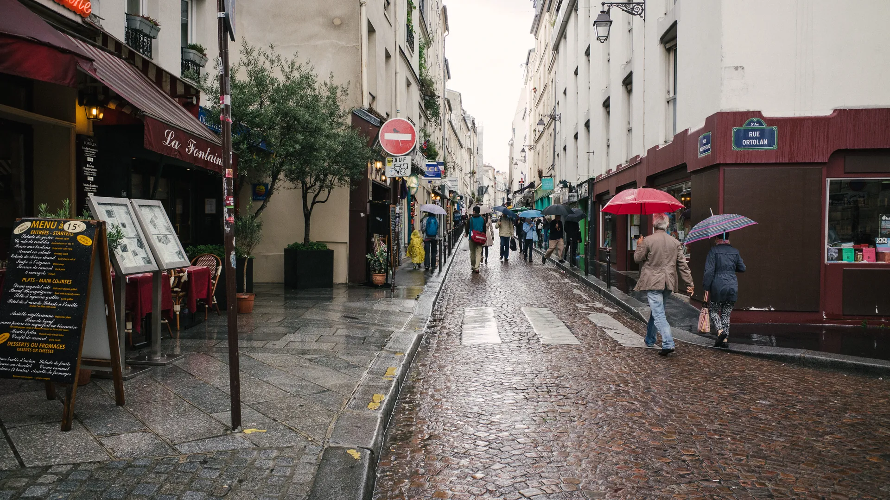
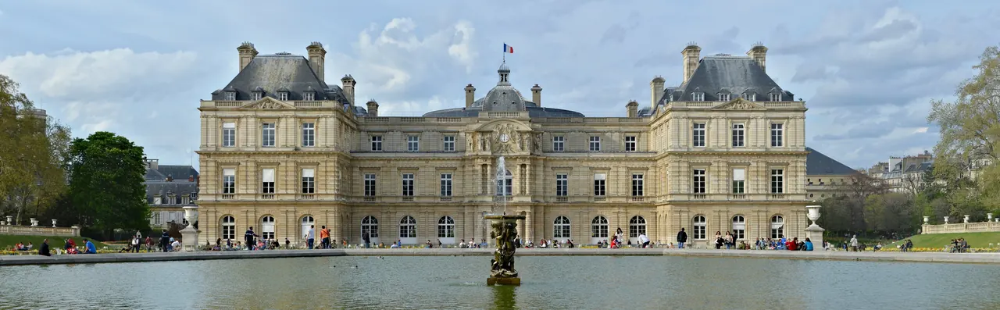

{kind=link}
{kind=link}
관광·미술관
Nous avons déjà des billets.
이미 표가 있습니다.
누 자봉 데자 데 비예

센(Seine) 강 좌안(Rive Gauche) 5구에 펼쳐진 12세기 소르본 대학의 설립 이래 800년간 파리의 지성과 혁명 사상을 이끌어온 학생과 학문의 성지다.
중세 유럽 전역에서 모여든 교수와 학생들이 출신 국가와 상관없이 오직 '라틴어(Latin)'로 토론하고 강의를 들었던 데서 '라탱 지구(Quartier Latin)'라는 이름이 탄생했다.
고대 로마 시대의 뤼테스(Lutèce) 원형경기장(Arènes de Lutèce)과 클뤼니 목욕탕 유적 위에, 볼테르, 루소, 빅토르 위고, 마리 퀴리가 잠들어 있는 국가의 성소 팡테옹(Panthéon), 헤밍웨이와 제임스 조이스가 드나들던 전설적인 영문 서점 셰익스피어 앤 컴퍼니(Shakespeare and Company), 그리고 파리 시민들이 가장 사랑하는 녹색 쉼터 뤽상부르 공원(Jardin du Luxembourg)이 하나의 지적 산책로로 이어진다.
"고대 로마의 돌바닥에서 르네상스 대학 건물, 그리고 1968년 5월 혁명의 열기가 서린 서점 골목을 지나 뤽상부르 공원의 녹색 철제 의자에 앉아 파리의 오후를 음미하는 좌안 인문학 산책의 정수다." 셰익스피어 앤 컴퍼니에서 출발해 소르본 대학 앞을 지나 팡테옹을 조망하고 뤽상부르 정원의 메디치 분수로 이어지는 2시간 코스를 추천한다.
| 운영시간 | 재확인 |
|---|---|
| 휴무 | 재확인 |
| 예약 | 재확인 |
| 항목 | 상세 정보 |
|---|---|
| 위치 | 5e arrondissement, 75005 Paris |
| 입장료 | 야외 거리, 뤽상부르 공원, 소르본 주변 무료 / 팡테옹 내부 성인 €13.00 |
| 교통 접근 | RER B선 Luxembourg역 (공원 및 팡테옹 직결), 메트로 10호선 Cluny - La Sorbonne역 / Maubert - Mutualité역, 메트로 4호선 Saint-Michel역 |
| 로컬 시장 팁 | Marché Maubert (모베르 시장): 화·목 07:00–14:30, 토 07:00–15:00에 광장에서 열리는 파리 최고 수준의 전통 식재료 시장 |

Nous avons déjà des billets.
이미 표가 있습니다.
누 자봉 데자 데 비예
On peut prendre des photos ?
사진 찍어도 되나요?
옹 푀 프랑드르 데 포토
Où commence la visite ?
관람은 어디서 시작하나요?
우 코망스 라 비지트

1868년 앙리 라브루스트가 주철 기둥과 9개 도자기 돔으로 완성한 19세기 건축의 걸작 '라브루스트 열람실'과 일반에 전면 무료 개방된 거대한 타원형 '오발 열람실(Salle Ovale)', 프랑스 국립도서관 박물관.

18세기 원형 곡물거래소를 세계적인 건축가 안도 다다오가 노출 콘크리트 원통 실린더로 리노베이션한 현대미술관. 프랑수아 피노 회장의 세계적 현대미술 컬렉션과 1889년 돔 천장 무역 파노라마 프레스코화.

렌조 피아노와 리처드 로저스가 건물 배관과 골격을 외벽으로 노출시킨 20세기 하이테크 건축의 전설이자 유럽 최대 근현대미술관. ⚠ 2025년 가을부터 2030년까지 전면 개보수 공사로 본관 폐관 중.

클로드 모네가 43년간 직접 꽃과 연못을 가꾸며 불후의 『수련』 대작을 창조해낸 살아있는 인상파 캔버스. 초록색 일본식 다리가 걸린 '물의 정원(Jardin d'eau)'과 핑크빛 모네 생가 아틀리에.

1900년 파리 만국박람회를 위해 건립된 45m 높이 아르누보 철골 유리 네이브(Nave)의 기념비적 국립 전시장. 2024 파리 올림픽을 거쳐 리노베이션 완료 후 재개관한 파리 문화 예술의 중심지.

17세기 귀족 저택(Hôtel particulier), 파리에서 가장 오래된 대칭 광장 보주 광장(Place des Vosges), 유대인 전통 미식 로지에 거리, 북마레의 감각적인 독립 부티크와 갤러리가 공존하는 역사·트렌드 지구.